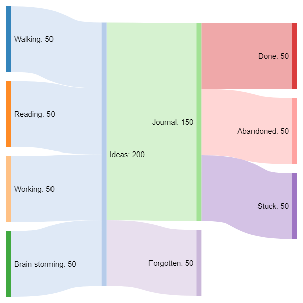
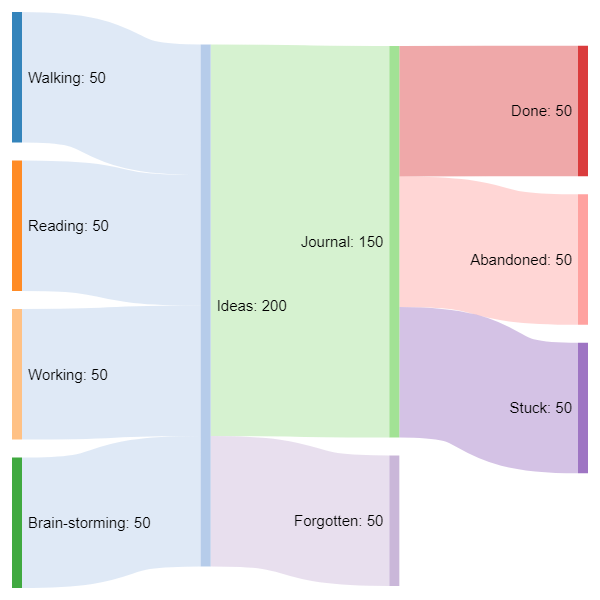

Sankey diagrams
To remember the name of sankey diagrams I just think "snakey" and then rearrange the letters a bit.
And dat's my tip o the day!
To build sankey diagrams my weapon of choice is:
Here is a very simple example:

To remember the name of sankey diagrams I just think "snakey" and then rearrange the letters a bit.
And dat's my tip o the day!
To build sankey diagrams my weapon of choice is:
Here is a very simple example:
